确保您的手机已连接到网络
检查手机的设定
以 Samsung S9(Android 8.0版本)为例：
1. 进入设置 -- 通知 -- 云橙V2 -- 打開允許通知按鈕。
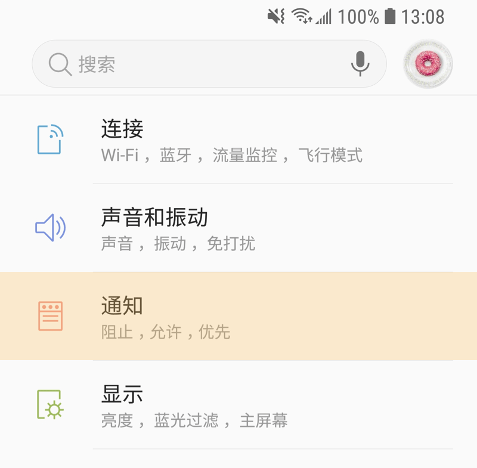
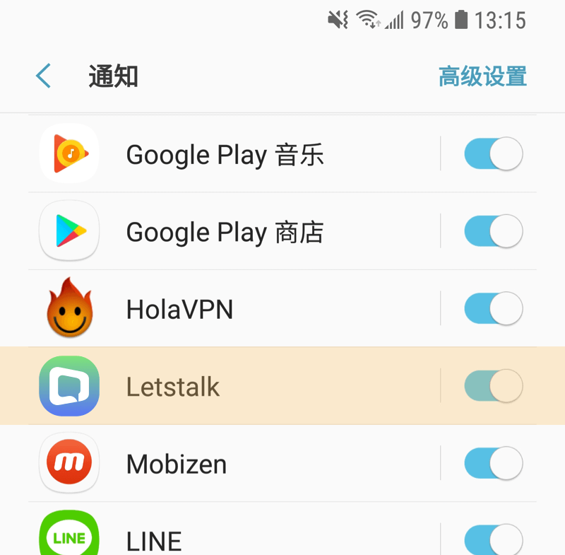
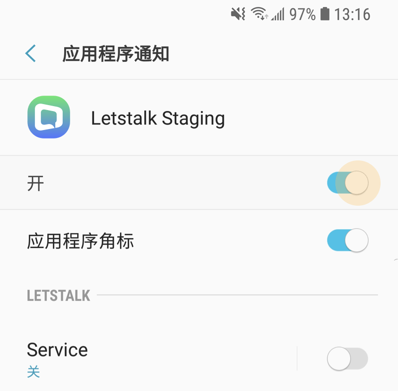
2. 点击手机的功能键 -- 进入多任务页面-- 点击左上方选单 -- 锁定应用程序 -- 点击右上角锁图示锁定。
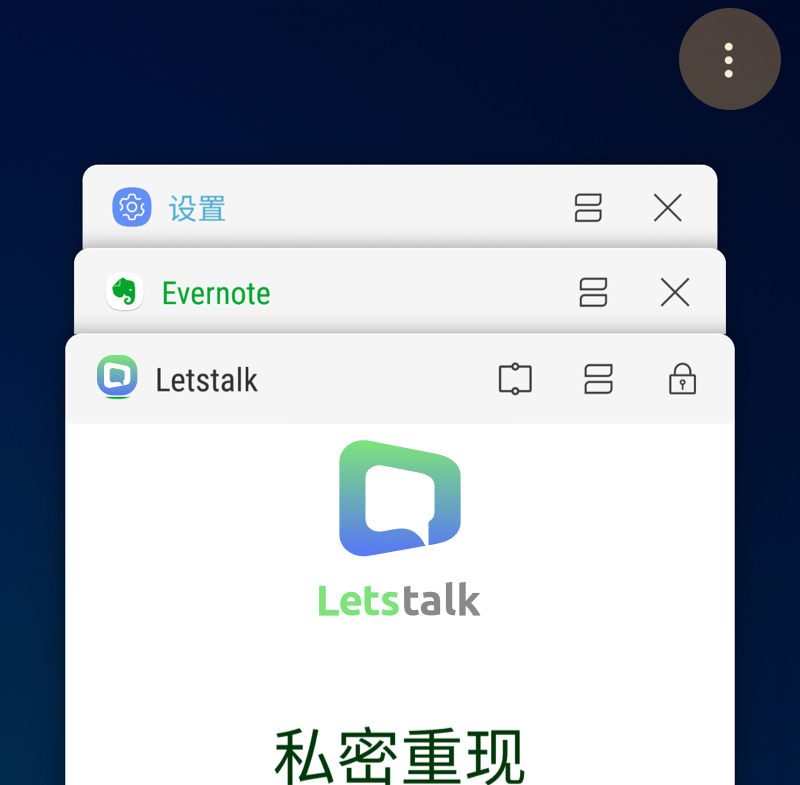
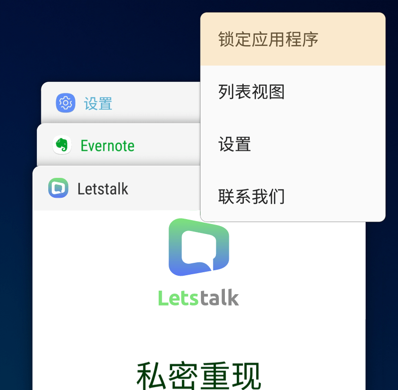
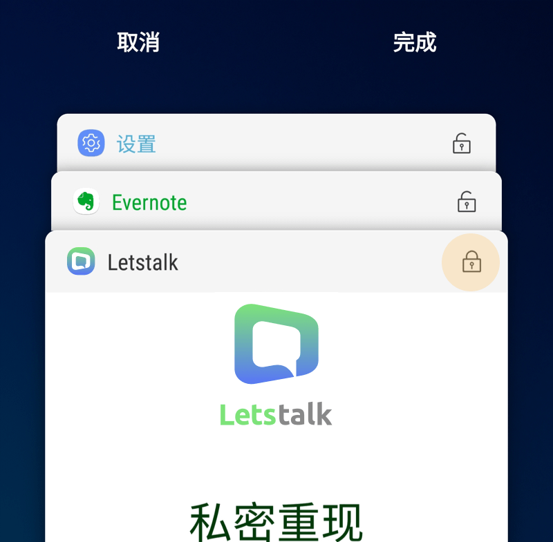
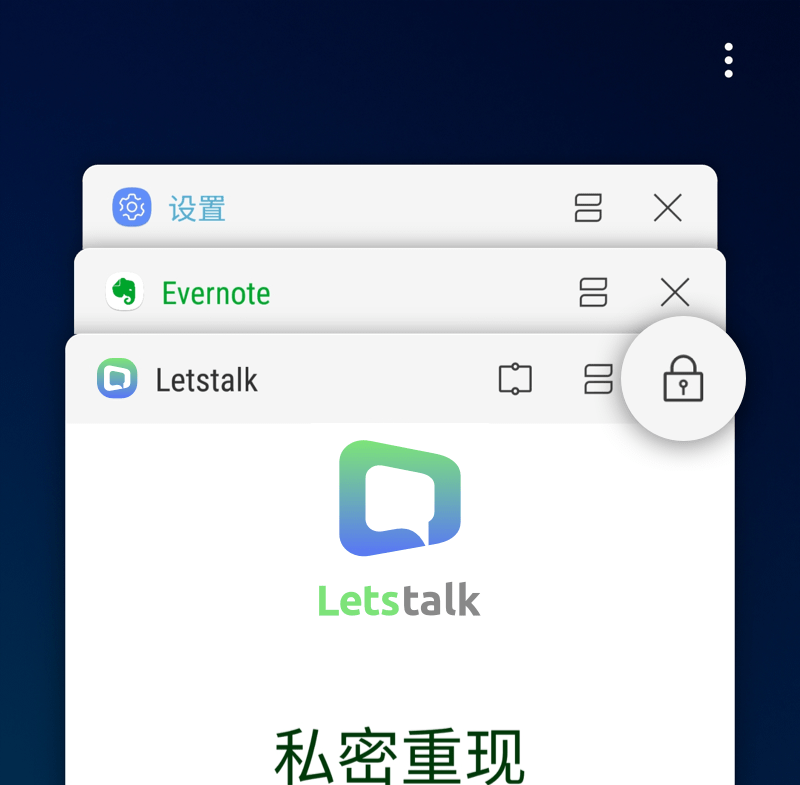
3. 进入设定 -- 设备维护 -- 电池 -- 未监视的应用程序 -- 点选”添加应用程序”后加入 云橙V2。
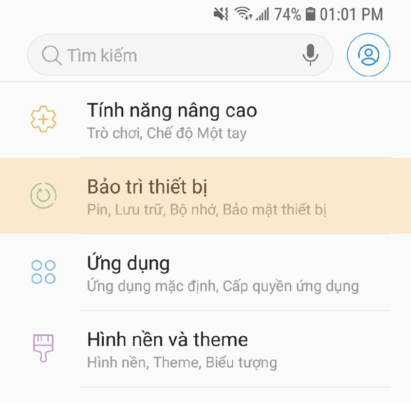
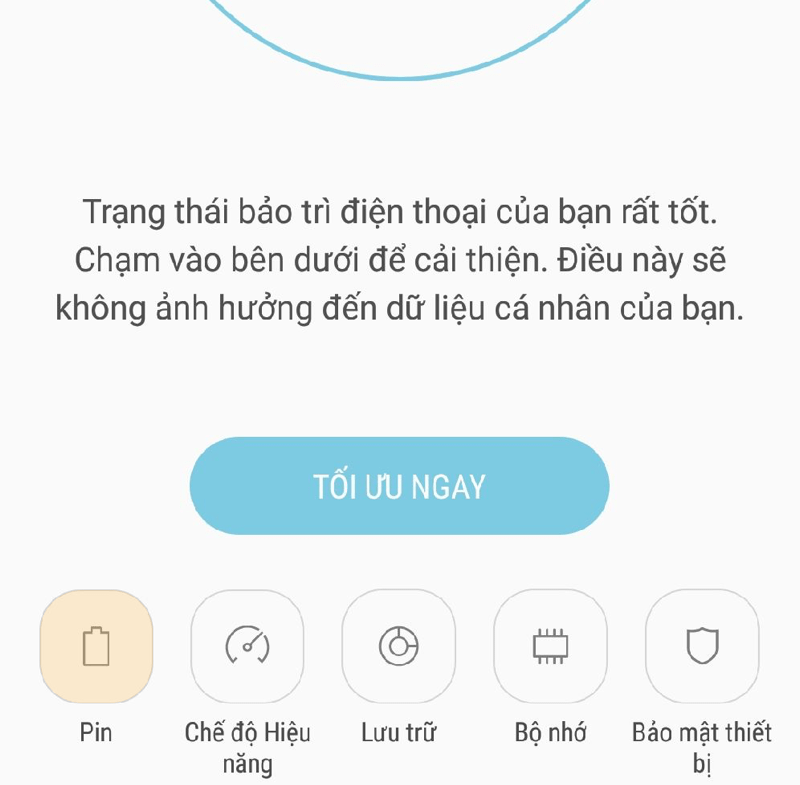
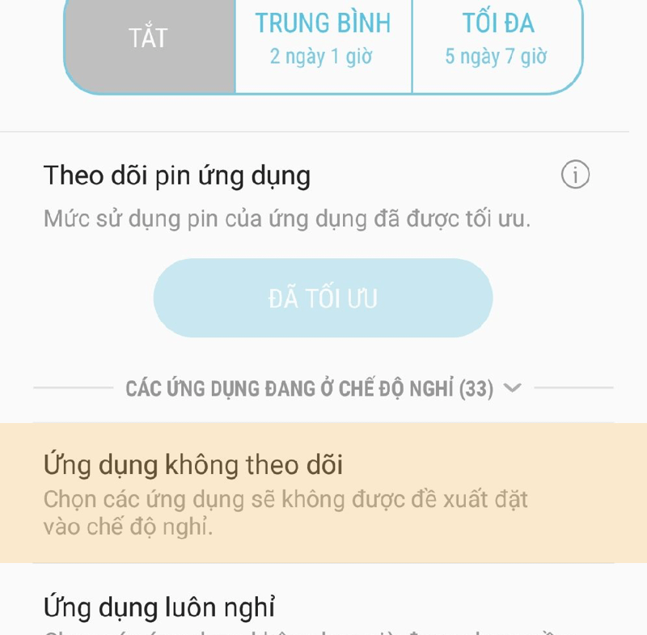
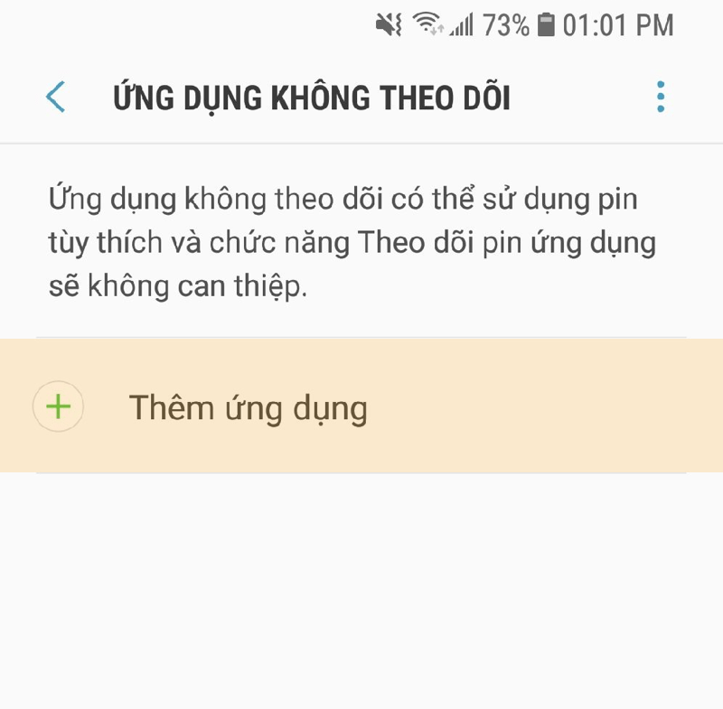
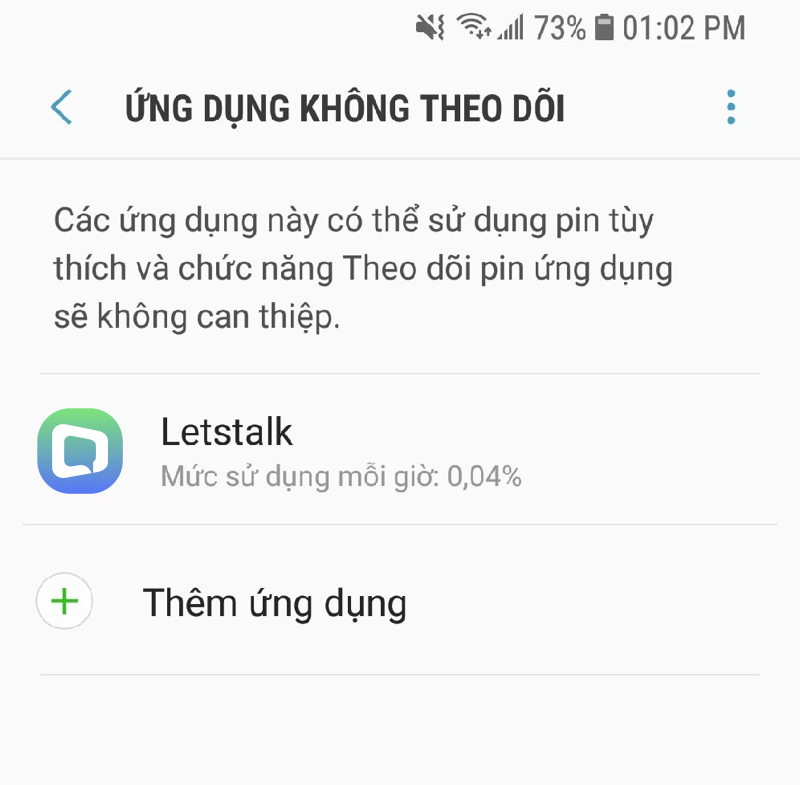
4. 进入设定 -- 设备维护 -- 内存-- 进入多任务页面 点选”不检查的应用程序” -- 添加 -- 将 云橙V2加入。
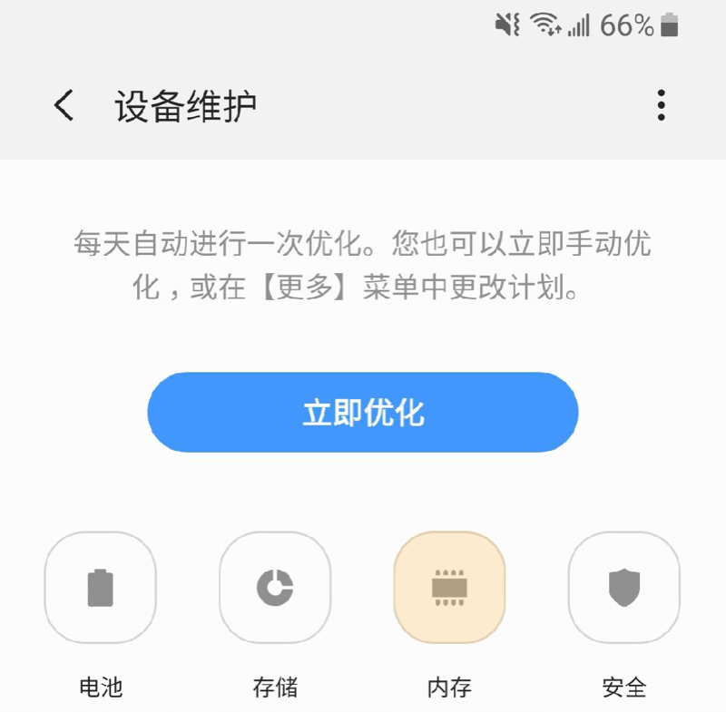
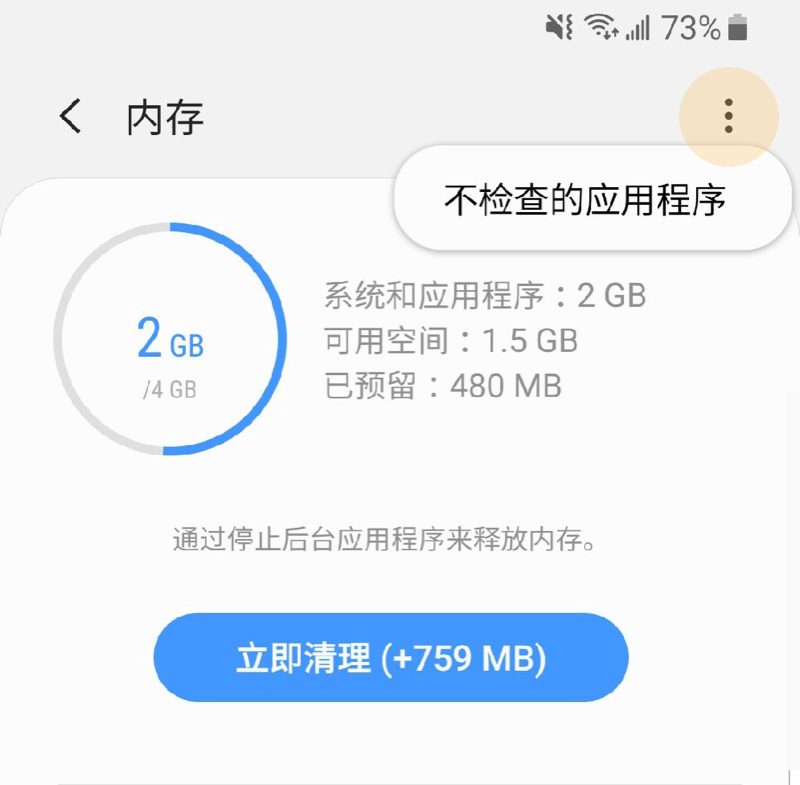
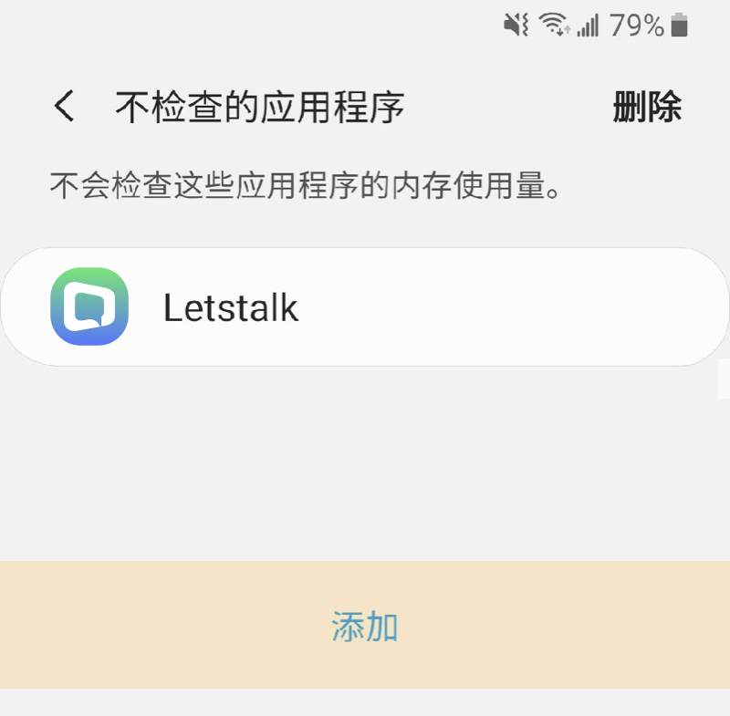